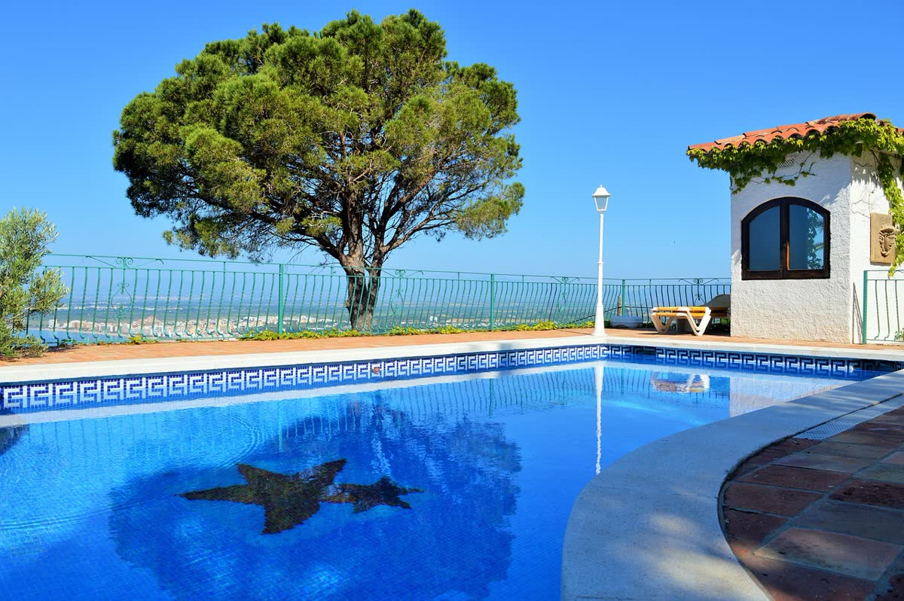

Manavgat, Sorgun ve Side'de Güvenli ve Stressiz Gayrimenkul Süreci
Turyap kurumsallığı ve bölgedeki derin uzmanlığımızla, gayrimenkul alım, satım ve kiralama süreçlerinizi şeffaflıkla yönetiyoruz. Evinizi, arsanızı veya ticari mülkünüzü doğru alıcılarla buluştururken her aşamada yanınızda oluyoruz.
★★★★★ 5 · 194 Google yorumu
